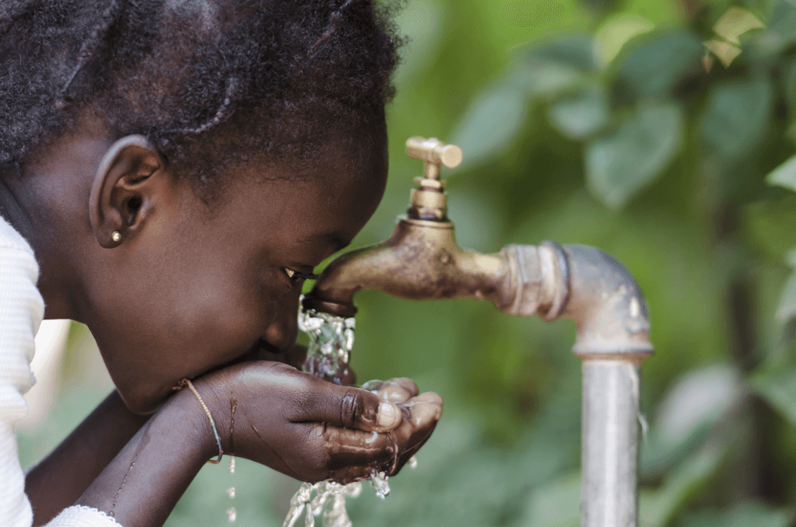

Grace Outreach Coalition
Transforming Communities, One Village at a Time
(607) 761-2722
Our Mission
In July 2011, we spearheaded a pilot eradication of the disease, Schistosomiasis, using the drug Praziquantel in Borgu region of Niger state Nigeria, where the rate of prevalence
was at 46% and spread out over 427 communities.
[PICTURES][PICTURES][PICTURES]
[PICTURES][PICTURES][PICTURES]
Through this exemplary leadership over 90,000 inhabitants of Borgu emirate have been cured to date! The multi-year efforts of GOC continues to prevent the re-occurrence of the disease through the provision of water filters, water wells, education and medical provisions.